All chart elements have some common properties, such as font color, fill color, line style and font. To highlight the chart area, in the followng examples the jpg image with white background, instead of the png image with transparent background, will be used.
Lines are an important component of a chart. They constitute, for example, the axes, chart element outline and polylines. In the chart element properties editor, you can set line color, line style, line weight and other properties.
To set line color, click the color square on the Value column and the palette pops up:
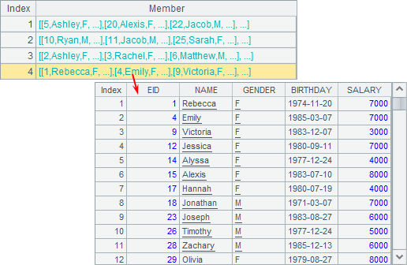
Select the desired color from the palette, or choose a color through Color Swatches:
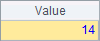
Or set an integer value for the desired color with an expression on Exp. column.
esProc offers a variety of color schemes that stored in config\chartcolor.properties. Users can choose the desired one or modify the default scheme. This applies to all color property settings within esProc. The property value retrieval method is detailed in f.property() in Function Reference.
To set line style, click on Line style on Value column and select the desired style from the drop-down list:
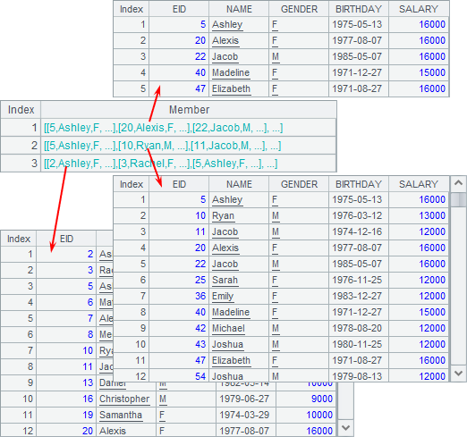
esProc offers common line styles including straight line, dash line, dotted line, dash-dot line and double-dot-dash line and none. All of them can be configured using line styling code in Exp. column.
The line weight is defined directly with pixel value.
For example, you can modify the above column chart plotting algorithm to change the vertical axis line properties, as shown below:

Set the axis line color as blue, change the line style into dash line and increase line weight to 2 pixels. As the result, the plotting algorithm is this:
|
|
A |
|
1 |
=canvas() |
|
2 |
=demo.query("select * from GYMSCORE where EVENT = 'Vault'") |
|
3 |
=A1.plot("BackGround") |
|
4 |
=A1.plot("NumericAxis","name":"y","location":2,"axisColor":-16776961, "axisLineStyle":2,"axisLineWeight":2,"labelFont":"Calibri", "labelOverlapping":true) |
|
5 |
=A1.plot("EnumAxis","name":"x","categories":A2.(NAME), "labelFont":"Arial") |
|
6 |
=A1.plot("Column","axis1":"x","data1":A2.(NAME),"axis2":"y", "data2":A2.(SCORE),"text":A2.(SCORE)) |
|
7 |
=A1.draw@p(450,350) |
A3 is added to plot a white background. As some of the vertical axis line properties have changed, A4’s code changes accordingly. With these modifications, the plotting result is:
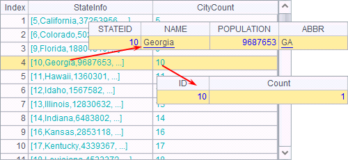
It can be seen that the vertical axis is different.
Properties of fill color
The fill color is the mostly used property for all chart elements. You can flavor the chart and make the data comparison more vivid and intuitive by setting the fill color.
Click on color square on the Value column and the Set color panel will pop up for setting fill color. Modify the fill color for background chart element in A3, as shown below:

Here the background fill color is adjusted into light blue and Gradient color setting is removed. A3’s code thus changes too. Here’s the plotting result:

As can be seen, the whole background turns light blue. You can also use gradient color for the fill. Check Gradient color and set Color2 and Angle (as shown below), and preview the effect Preview section in the bottom left of the Set color panel.
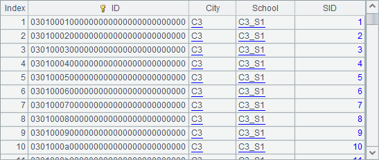
Here’s the plotting result:

Properties of text
Text is also an indispensable part of a chart. For texts in different positions, the font, font type, font color and other properties can be set individually.
To edit font property, select one of the available fonts from the drop-down list:
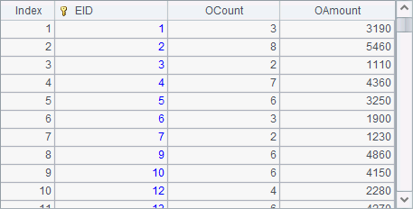
Select font size from the drop-down list, or set it in pixels with an expression on Exp. column:
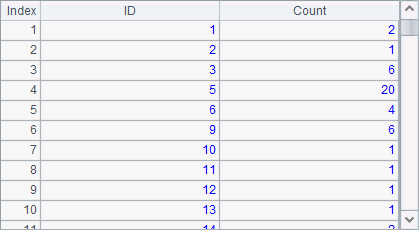
Edit text style property in the Set font style window:
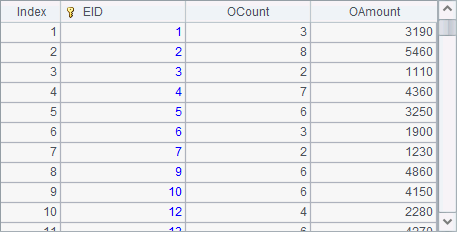
The font color editing is similar to the line color editing as described in Properties of lines.
For example, go on adjusting the column chart of vault competition results by changing the font, font size, font style and font color of the horizontal axis labels:
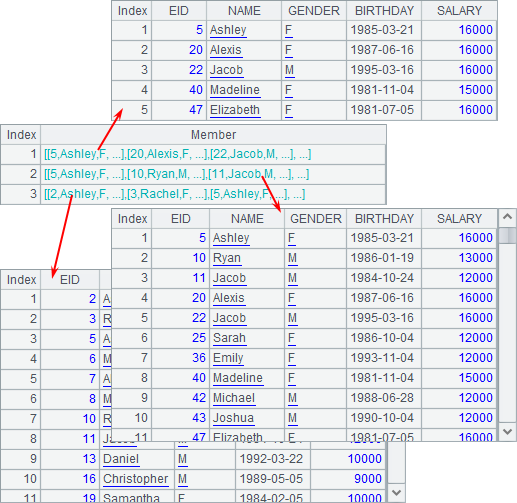
The chart then becomes this:
Obviously, the appearance of label texts on the horizontal axis has changed.
Black-and-white fill pattern
Though in moste cases we prefer colorful chart elements by choosing a desired fill color or selecting a gradient color fill type, there are the cases when we are not able to use colors. One example is when we use the monochrome printer that cannot display color effects. If we still use the color fill pattern, the print will display different shades of gray color which makes viewing difficult. In this case we need to switch to the black-and-white fill pattern.
To modify the Fill Color property in A6 to replot the above column chart, for example:
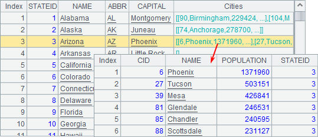
Select the vertical line (as shown above) under Fill style. Below is the plotting effect in A7:

Each column has becom filled by black-and-white vertical lines. The default fill type is black-and-white, which fills a chart element with while, black and gray lines or swatches. But such a configuration will have same effect on each column, which is unable to distinguish players. So we can configure the fill type property through sequence parameters:

Use sequences to represent different Fill Color properties:
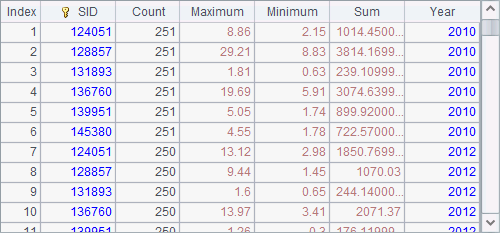
Now, A7’s plotting result is as follows:
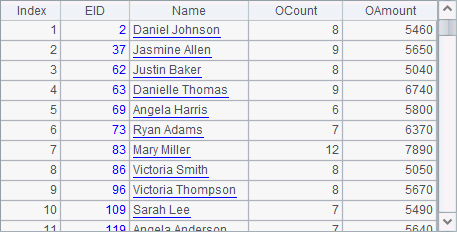
In this way, we can distinguish players even with a monochrome printer.
Actually, we can also choose different colors for different fill types, instead of using the default black-and-white type:
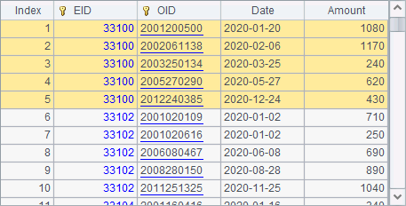
Now, the plotting effect is like this:

By configuring different fill types, we can create richer visualization for the chart element. Note that we need to configure the fill type for each chart.